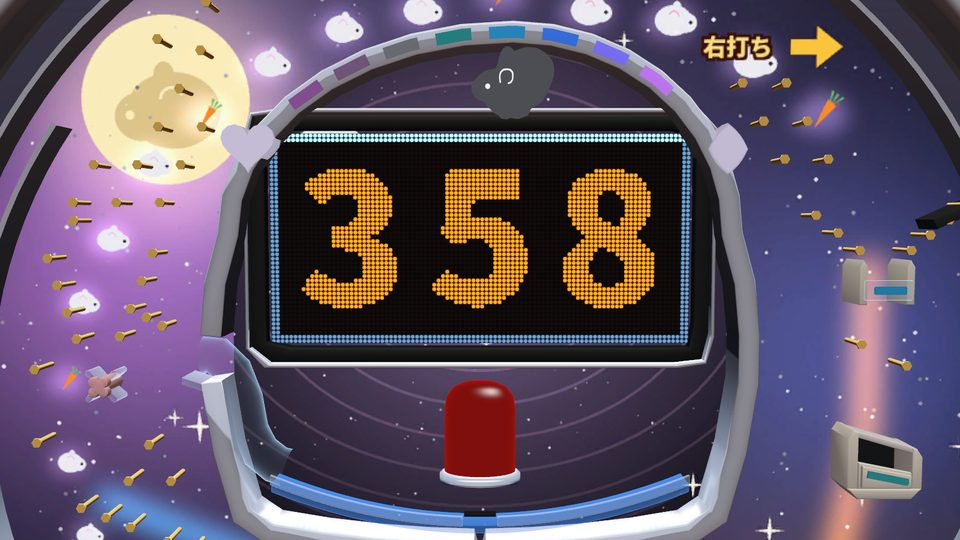
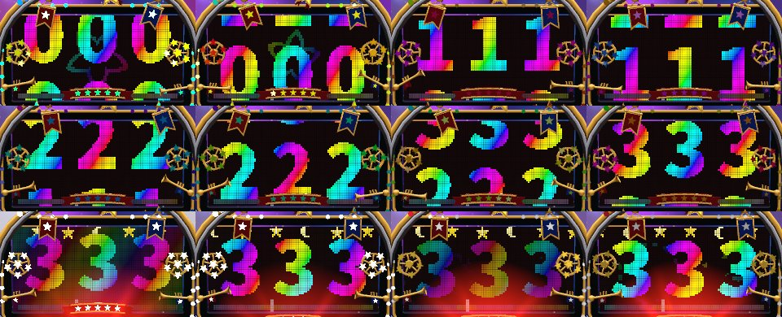

最終更新：2026-11-23（月）
STAR PARADE
 盤面
盤面
ドット表示とパトランプの確変ループ機。確変は次回まで、通常当たりのあとは時短（チャンスタイム）15回。島の裏の列に6台。
スペック
| 大当り確率 | 1/69.7 |
|---|
| 確変中 | 1/20.0 |
|---|
| 確変 | 次回まで |
|---|
| 時短 | 15回（チャンスタイム） |
|---|
| 突入率 | 約69%（引き戻し込み） |
|---|
| 継続率 | 約81%（引き戻し込み） |
|---|
| ラウンド | 6R・3R（1R10カウント） |
|---|
| 出玉 | 6R約480個・3R約240個 |
|---|
| 賞球 | ヘソ3・電チュー2・アタッカー8・入賞口10 |
|---|
| 機械割 | 約141%（試算） |
|---|
※チャンスタイム15回の引き戻しは約19%。ボーダーは調査中。
大当り振り分け
| 入賞口 | 6R確変 | 3R確変 | 3R通常 |
|---|
| ヘソ | 10% | 51% | 39% |
|---|
| 電チュー | 25% | 51% | 24% |
|---|
※777が6R確変、ほかの奇数が3R確変、偶数が3R通常。偶数でも確変昇格チャンスがある。
普図・電サポ
| 通常 | 確変・チャンスタイム |
|---|
| 普図の当たり | 1/16 | 9/10 |
|---|
| 普図の変動 | 12秒 | 1.2秒 |
|---|
| 電チュー開放 | 0.15秒×1回 | 1.6秒×2回 |
|---|
打ち方
- 強さは自動。台を取るといちばん回る強さで打つ
- 大当り・確変・チャンスタイム中は自動で右打ち
| 左打ち | 天釘・ハカマ・風車・道釘・ジャンプ釘と命釘を通ってヘソへ。役物の左肩からワープに入った玉は、ステージから真ん中の穴とトンネルを通ってヘソの真上に出る |
|---|
| 右打ち | 返しゴムからスルーゲート、電チュー、アタッカーの順 |
|---|
モード
| モード | 確率 | 見分け方 |
|---|
| 通常 | 1/69.7 | ふつうの縁 |
|---|
| 確変 | 1/20.0 | 液晶の縁を赤と金の光が回る。盤面の光は赤紫 |
|---|
| チャンスタイム | 1/69.7 | 青い縁。上の辺に残り回数、残り5回からカウントダウン |
|---|
 確変中
確変中

チャンスタイム中
演出信頼度
※信頼度は解析値（通常時）。50%以上と確定は赤字。
保留の色
| 色 | 信頼度 |
|---|
| 青 | 1.7% |
| 緑 | 7.3% |
| 赤 | 33.2% |
| 金 | 65.6% |
| 虹 | 確定 |
リーチ
| 演出 | 信頼度 |
|---|
| ノーマルリーチ | 3.1% |
| スーパーリーチ | 48.0% |
| 全回転 | 確定 |
| 最終決戦（PUSH） | 52.3% |
予告
| 色 | 夜空予告 | 流星予告 |
|---|
| 全体（色を問わず） | 1.3% | 19.4% |
| 白 | 0.2% | 3.7% |
| 青 | 0.7% | 10.8% |
| 緑 | 1.7% | 24.3% |
| 赤 | 6.2% | 54.7% |
| 金 | 23.5% | 84.7% |
| 虹 | 確定 | 確定 |
ステップアップ予告
| 演出 | 信頼度 |
|---|
| ステップ1まで | 4.4% |
| ステップ2まで | 10.9% |
| ステップ3まで | 37.4% |
| ステップ4まで | 71.5% |
| ステップ5まで | 92.8% |
擬似連
| 演出 | 信頼度 |
|---|
| ×2 | 6.2% |
| ×3 | 32.2% |
| ×4 | 56.5% |
変動開始
| 演出 | 信頼度 |
|---|
| ため | 1.6% |
| 逆回転 | 4.1% |
| ふるえ | 14.1% |
| 1つずつ | 25.8% |
| フラッシュ | 54.1% |
| 落下 | 1.9% |
| 吸い込み | 2.1% |
| 右から | 11.4% |
| キャラが押す | 45.4% |
数字の回り方
| 演出 | 信頼度 |
|---|
| 逆さ | 2.1% |
| めくり | 7.5% |
| ドラム | 12.3% |
| シャッフル | 26.5% |
予兆（上を走るキャラ）
| 演出 | 信頼度 |
|---|
| なかま（3匹） | 1.1% |
| 大行進（6匹） | 2.6% |
| 金 | 13.7% |
| 虹 | 69.1% |
リーチ中の予告
| 演出 | 信頼度 |
|---|
| 夜空予告 | 17.8% |
| 流星予告 | 35.1% |
スーパーリーチの後半
| 演出 | 信頼度 |
|---|
| コマ送り | 40.2% |
| 塗り替え | 43.2% |
| 押し合い | 58.9% |
| アタック | 48.0% |
| 追っかけ | 46.3% |
| ドリル | 64.8% |
| カウントダウン | 41.5% |
ノーマルリーチの見せ方
| 演出 | 信頼度 |
|---|
| 標準 | 2.3% |
| 拡大 | 4.0% |
| 逆回転 | 3.1% |
| バウンド | 3.5% |
リーチの終わり方
| 演出 | 信頼度 |
|---|
| ピタ | 8.0% |
| すべり | 22.4% |
| 戻り | 25.7% |
| ゆらゆら | 11.5% |
| ビタ止まり | 34.1% |
確定演出
虹の保留・ブラックアウト・変動開始時のパトランプ・復活・フリーズ・全消灯
演出解説
保留
保留はヘソと電チューで4つずつ、電チュー優先。色は青・緑・赤・金・虹で、金から激アツ、虹は確定。
 保留ランプ（光っているのが保留）
保留ランプ（光っているのが保留）
 保留変化（左端が白から青へ）
保留変化（左端が白から青へ）
予告・擬似連
- 夜空予告は弱め、流星予告は熱め。どちらも色が6段（白・青・緑・赤・金・虹）。流星の赤から激アツ、虹は確定
- ステップアップは5段まで。4段目まで行けば71.5%
- 擬似連は「もう一回!」で再変動。×3で32.2%、×4で56.5%
- 予告はリーチ中にも出る。リーチ中の流星予告は35.1%
 流星予告
流星予告
 ステップアップの4段目
ステップアップの4段目
リーチ
- ノーマルリーチは3.1%と期待薄
- スーパーリーチは48.0%。後半の型では押し合い（58.9%）とドリル（64.8%）が熱い
- スーパー中はドット表示の星と月が応援する。当たりなら月が満月になる
- 最終決戦はドット表示の前にPUSHのボタンが出る。52.3%
スーパーリーチの流れ（こま）
 1. 入りのカットイン
1. 入りのカットイン
 2. 後半の「激アツ」
2. 後半の「激アツ」
 3. 最終決戦
3. 最終決戦
 4. PUSH
4. PUSH
カットインとPUSHの絵は何種類かある
パトランプ
役物の中の回転灯。回れば大当り。
大当りの時に回るタイミング
| 変動開始時 | 4% |
| リーチ成立時 | 18% |
| 当落時（リーチの決着） | 78% |
※ブラックアウトのあとは変動開始時に回る。復活の時は、はずれに見せてから回る。
プレミア・隠し要素・小ネタ
プレミア（当たり確定）
| 演出 | 内容 |
|---|
| ブラックアウト | 変動開始時に暗転し、パトランプが回る |
|---|
| フリーズ | 変動開始と同時に全部が止まって音が消え、光って確定 |
|---|
| 全消灯 | 液晶と台の電飾が全部消えて音もなくなり、光って確定 |
|---|
| 変動開始時のパトランプ | 回転の頭でパトランプが回る |
|---|
| 虹 | 虹保留・虹の予告（夜空・流星） |
|---|
| 全回転 | 333か777でそろう。最後まで回って虹のまま止まる |
|---|
| 復活 | スーパーではずれに見せてから当たる |
|---|
※ブラックアウト・フリーズ・全消灯は通常時だけ。

全回転（こま。虹の数字が333で止まる）
隠し要素
- 確変昇格チャンス：偶数でそろったあと再変動し、奇数で止まれば確変に昇格。3R確変の30%は偶数でそろえてから昇格し、3R通常の40%は昇格に挑んで失敗する
- 保留の先読み：保留は入った時に本当の色より1〜2段下で見えることがある。待っている間に1段ずつ上がり、上がりきらない分は変動開始時のチャンスアップで上がる。変動開始時に白い保留がちらつくだけならガセ
- チャンスゾーン：先読みのゾーン。前に保留が2つ以上ある時に出る。はずれの時はスーパーリーチになる回だけなので、ゾーンが来たら最低でもスーパー
- 期待度メーター：枠の左右の電飾が下から青・緑・赤・金と埋まる。虹まで上がるのは虹保留・ブラックアウト・全回転・当落で当たった時だけ
- 星の役物：スーパーの2段目で落ちれば92.9%。残念で戻っても、復活でまた落ちる
 確変昇格
確変昇格
小ネタ
- チャンス目311：リーチなしのはずれで311に止まると金色に光って跳ねる。先の保留に当たりがあると出やすく、60.7%。たまたま311で止まることはない
- 擬似連で止まる数字は123や456のような連番。「もう一回!」の字は緑・赤・金と色が上がる
- 確変・チャンスタイム中は予告・ステップアップ・擬似連・変動開始が出ない
- オカルト①〜⑤は効く（店の遊び方）
データカウンター
 データカウンター
データカウンター
台の上に大当り・連チャン・スタート・前回の4つと呼び出しランプ。休憩コーナーの状況の板でも全台のデータが見られる。